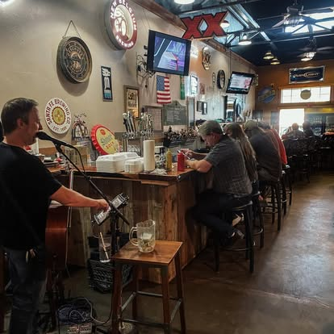
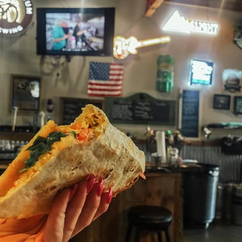
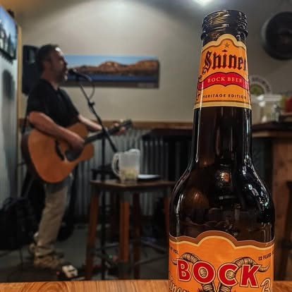

A Cloudcroft Institution
Dave’s Café is one of those durable Cloudcroft spots that matters because it is steady, familiar, and woven into local habit. Sitting at 300 Burro Avenue, it has been part of the village since 1984 when David Venable opened the original restaurant. His youngest son, Chuck Venable, now runs the place.
The feel is more bar-and-grill or burger joint than polished café. This is a locals-and-visitors crossover place — a casual dining room where you can get burgers, breakfast, and comfort food without any formality. It also functions as a live-music spot, hosting performances throughout the week.
If you want a familiar sit-down meal in Cloudcroft with some local character, Dave’s is the kind of place that delivers exactly that.

What to Expect

Live Music
Dave’s Café is among the Cloudcroft businesses that host live music throughout the week. It adds a social, small-town layer to a casual meal.
Local Favorite
This is the kind of place where locals and visitors overlap. No destination-dining pretension — just steady, familiar food and a relaxed atmosphere.
Since 1984
Originally opened by David Venable and now run by his son Chuck, Dave’s Café has been part of Cloudcroft’s Burro Avenue for over four decades.
Visit Dave’s Café
Everything you need to know before you go.
Location
300 Burro Ave, Cloudcroft, NM 88317. On the main street — walkable from anywhere in the village.
Hours
Hours may vary and have been affected by staffing. Some days (including Wednesdays and Thursdays) may see reduced hours. Call ahead or check Facebook before visiting.
Contact
Phone: (575) 682-2127
Email: cafe.daves@yahoo.com
Good to Know
Small-town hours can shift, especially with staffing changes. Dine-in is available. Takeout, delivery, and patio details are not confirmed — call ahead to check. Alcohol may be available but is not fully confirmed.
Inside Dave’s

Burgers, Breakfast & Live Music on Burro Ave
Dave’s Café is a Cloudcroft institution — casual comfort food, live music, and over four decades of local character at 300 Burro Avenue.